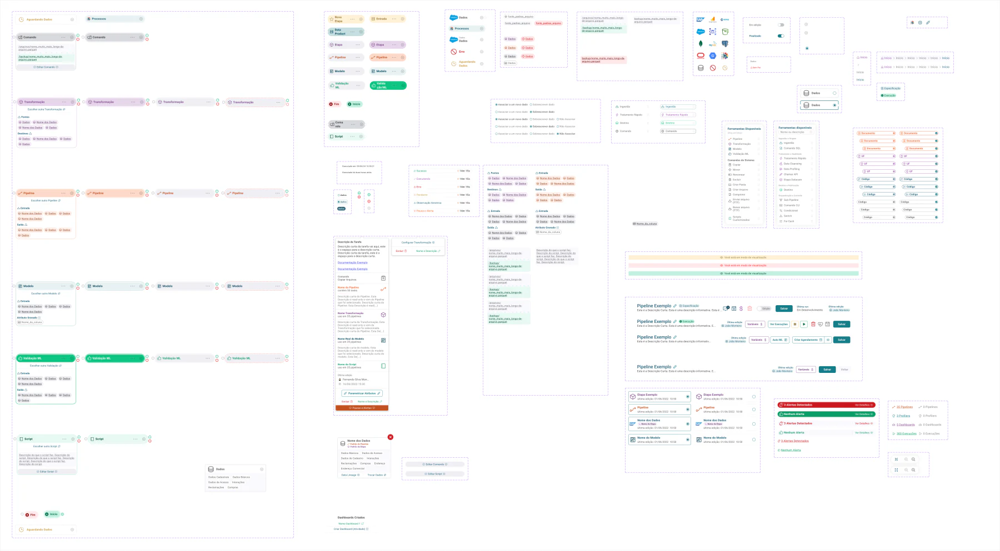

Datacare · Desde 2023
Como os analistas examinam e tratam dados no Datacare
Desenhei ferramentas para que os analistas pudessem identificar um problema nos dados e escolher como tratá-lo.

Contexto e meu papel
A empresa Assesso prestava serviços de tratamento e qualidade de dados e buscava ampliar sua atuação como plataforma. Sua ferramenta própria reunia o conhecimento da empresa sobre dados brasileiros, como CPF e endereços, mas os analistas tinham dificuldade para visualizar os dados, compreender as ferramentas disponíveis e operar a interface. A liderança via nessas dificuldades um obstáculo à agilidade dos processos.
Entrei no início de 2023 como único designer. Busquei referências em outras plataformas e trabalhei com os desenvolvedores. O líder de produto aprovava as propostas, e eu as testava com analistas e com pessoas de fora da empresa.
Comecei pela navegação e pela organização das informações em cada tela. Nas entregas seguintes, trabalhei em como mostrar os dados e orientar o analista na escolha das ferramentas.
Uma interface para o ambiente real de trabalho
Observei que os analistas usavam notebooks simples, com telas pequenas. Adotei a resolução de 1366 × 768 como referência para desenhar as tarefas no espaço que eles tinham à disposição.
Escolhi um tema claro para as telas e a iluminação do escritório. Usei um fundo cinza suave para acomodar tabelas densas. As cores vieram do logotipo, e escolhi a fonte Roboto para os textos.
Defini componentes que os diferentes módulos poderiam compartilhar. No editor de fluxos, os componentes também precisavam mostrar a relação entre uma tarefa e a seguinte.
Legibilidade em diferentes condições de visão
Testei as páginas em diferentes modos de cor para verificar se os textos, ícones e ações continuam fáceis de distinguir. Também avalio o contraste, o tamanho das letras e a proporção entre títulos, rótulos e valores para que a hierarquia da informação continue clara.

Entender os dados antes de tratá-los
Uma das primeiras entregas foi o profiler, a tela em que o analista examina os dados de cada coluna. Além de mostrar como o sistema armazena um valor, a tela indica o que ele representa, como um CPF ou um telefone. Uma amostra permite verificar padrões de preenchimento antes de escolher uma ferramenta de tratamento.
Um conjunto de dados podia ter milhões ou até bilhões de registros. Por isso, a interface mostra uma amostra. Os gráficos e indicadores continuam visíveis enquanto o analista percorre as linhas. Para consultar outras colunas, ele pode deslocar a tabela para os lados.
Escolhi representações visuais de acordo com o conteúdo de cada coluna. Nos testes, até os participantes com pouca experiência em dados conseguiram perceber diferenças entre as colunas sem precisar ler todos os nomes.
Com base nesse diagnóstico, o profiler sugere ferramentas de tratamento. O analista pode escolher uma delas e incluí-la no pipeline, a sequência de tarefas que transforma os dados.
Como a cor ajuda a reconhecer cada tarefa
Um pipeline podia reunir dezenas de tarefas. Para acompanhar o fluxo, o analista precisava entender de onde vinham os dados de cada tarefa e para onde seguiam, mesmo quando a sequência ocupava mais de uma tela.
A equipe considerou usar uma cor diferente para cada tarefa. Nos testes, tantas cores dificultaram reconhecer a função de cada uma. Passei a usar a mesma cor para tarefas do mesmo tipo. O roxo identificava transformações. O laranja indicava etapas que executavam outro pipeline. Cada tarefa também tinha nome e ícone.
Nos testes seguintes, o agrupamento por cor ajudou os participantes a reconhecer as categorias. Apliquei o mesmo critério aos componentes usados em outros pontos do fluxo.


Assistência para escolher o próximo passo
Também explorei o uso de inteligência artificial para orientar a escolha de ferramentas. Na proposta, um assistente resume os problemas encontrados nos dados e explica por que recomenda determinado tratamento.
Parte dessa proposta ainda aguarda implementação.
Exploração recente com Claude e Figma
Em uma exploração mais recente, usei a conexão MCP do Figma para desenhar um painel com o Claude. Descrevi o painel em uma conversa com a IA. Para montá-lo, usei os componentes que eu já havia criado e os valores de estilo definidos para a plataforma.

Resultados e aprendizado
A maior parte das soluções chegou ao produto. Os analistas continuam a usar o profiler na preparação dos projetos e avaliaram a ferramenta de forma positiva. A partir de uma sugestão deles, incluí subtítulos nas janelas de configuração para dar mais contexto à tarefa.
A liderança usou os protótipos em apresentações comerciais para mostrar o que planejava para a plataforma. Combinei as entregas com as equipes de produto e desenvolvimento conforme o tempo e as condições técnicas de cada etapa. Os retornos dos analistas descrevem sua experiência de uso. Não tenho medidas de produtividade para quantificar o impacto das mudanças.
Hoje, eu daria mais espaço aos testes com pessoas de fora da empresa e ao estudo de outras plataformas. Quem vê uma coluna de dados pela primeira vez pode revelar uma dificuldade que já passa despercebida para quem conhece o processo.